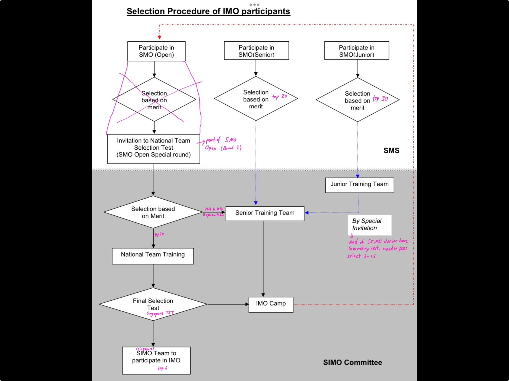

the way of Juche:
a guide to self-studying
I made this page as people often ask me how I improved in Math Olympiad. (This is not a Korean spy website, if not I would have all the questions from them already and will not have to ask you for them) I uploaded all my notes here with some links to other useful resources. Notes from RIMC (the Math Club of a top school in Singapore) and SIMO (basically Singapore's National Team) are private pages and can only be viewed with special permission from me. These notes are much more advanced.
Juche is the name of a Korean political ideology emphasising on self-reliance and independence. This describes how I improved at Math Olympiad without having any tuition. I uploaded all the Math Olympiad notes that I received or made for easy reference. However, you should not blindly follow the way of Juche as Evan Chen disapproves.
Uploaded notes are in .pdf format, and can be viewed using any PDF viewer (including Google Chrome). These are literally scrollshots of my old website automatically converted to PDF. If you use CollaNote (you should), you can use CollaNote's very convenient (NOT sponsored message, it is actually good) import PDF function to import my notes into CollaNote. (and then they will be .cnote)
Note that past papers are omitted from this page as they are in Contest Collections, which can be accessed through the navigation bar on the right. They can also be found on AoPS. Notes for non Math subjects are also omitted since these are in Notes Sharing, which is also on the navigation bar.
If you are from Singapore, you have access to the private pages containing RIMC and SIMO notes. Message me on Instagram for the link. Note that everything in private pages cannot be reposted on the Internet or be shared with people who do not have access. Below is a diagram showing the selection process for SIMO and the final Singapore Team.

Right after taking the PSLE in Singapore (I was 05524F), I started seriously learning Math Olympiad by viewing Think Academy (Chinese tuition centre) recorded lessons. Below is the notes that I took.
Think Academy P5 December
Think Academy P5 January
Think Academy P5 September
Think Academy final revision
In secondary school, I found the following useful resources for Math Olympiad. I improved in everything except synthetic geometry for some reason.
Math Olympiad book series
OTIS Excerpts (by Evan Chen)
Euclidean Geometry in Math Olympiad (by Evan Chen)
Evan Chen's Olympiad handouts
These are the contests that I have attended. I have not added the AMC 10A 2023 yet and will do so in future.